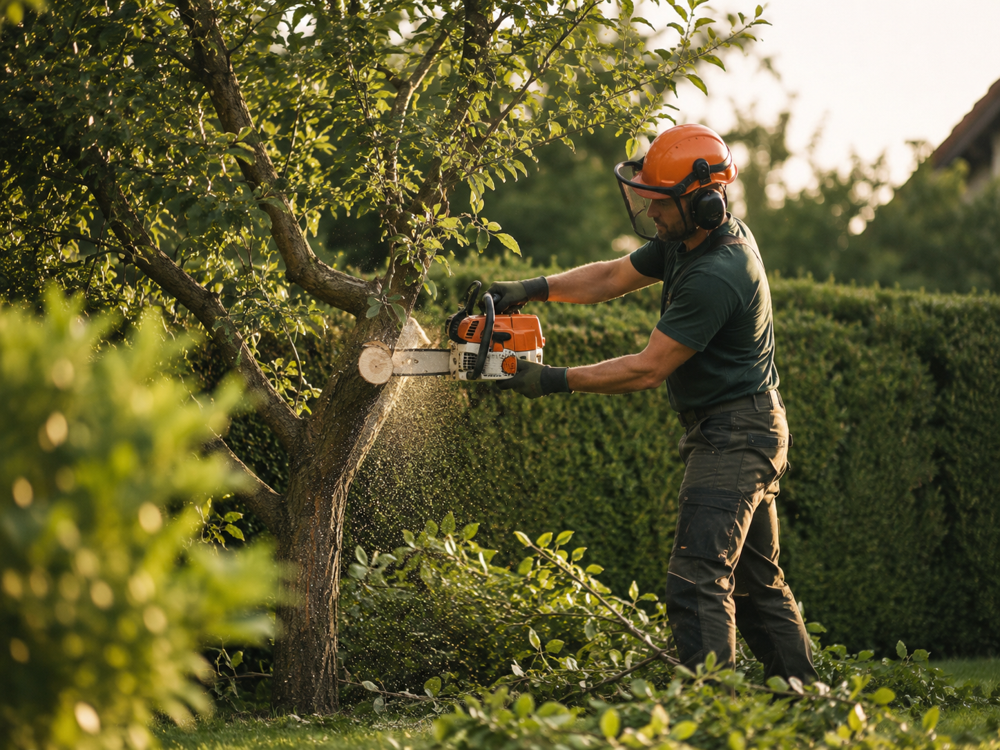
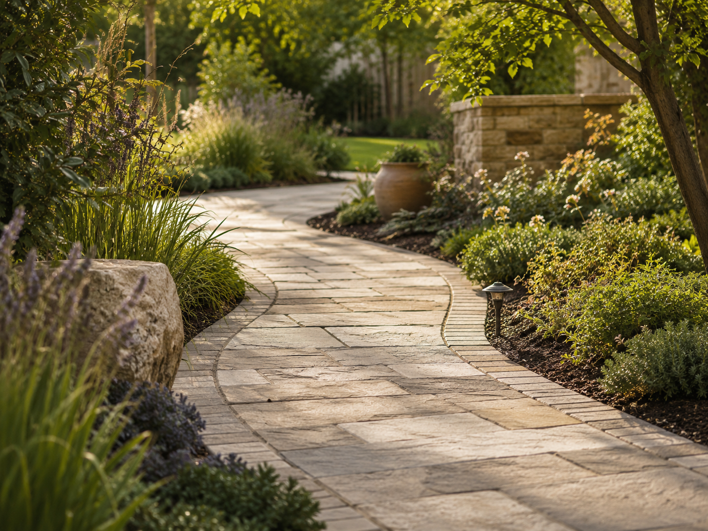
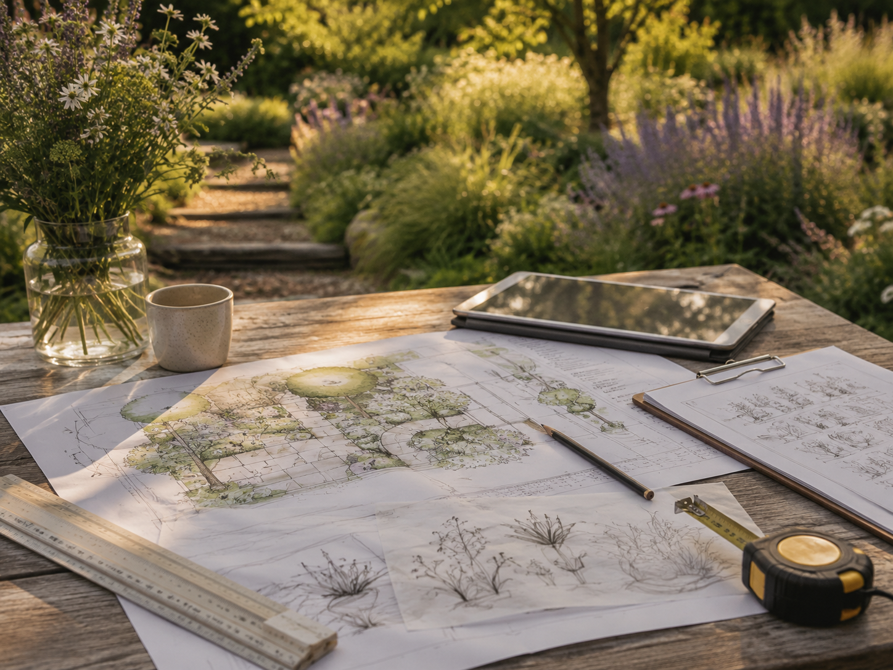
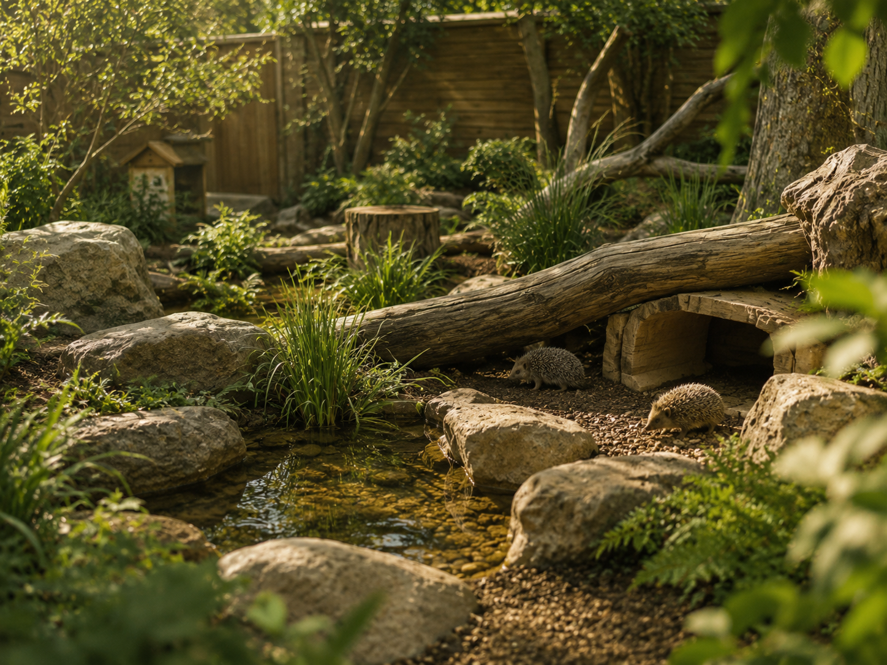
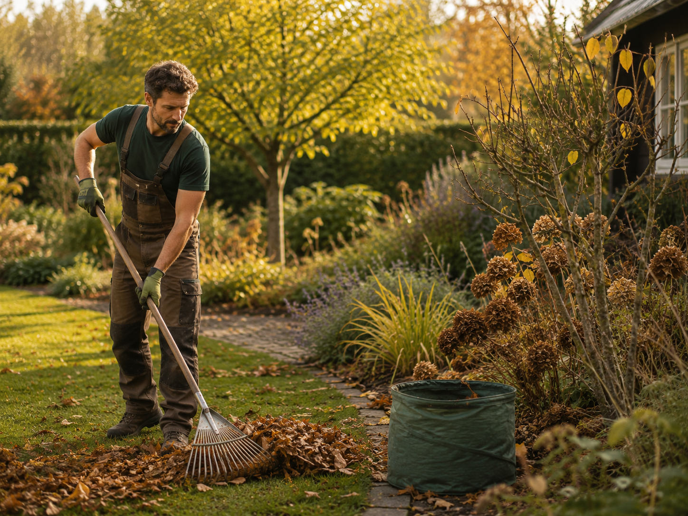

Leistungen
Passende Lösungen statt starrer Pakete.
Jeder Garten ist anders. Deshalb werden Umfang, Material, Pflegeaufwand und Ausführung nach Besichtigung und Abstimmung festgelegt. Zum Start liegt der Fokus auf überschaubaren Projekten mit klar begrenztem Leistungsumfang.

Gartenpflege & Rückschnitt
Pflege erhält nicht nur Ordnung, sondern auch Struktur und Nutzbarkeit. Ziel ist ein sauberer, gesunder Bestand, der zum Garten und zum gewünschten Pflegeaufwand passt.
- Rückschnitt von Sträuchern und Hecken
- Flächenpflege und Entfernen von Wildwuchs
- Saubere Kanten und kleinere Aufräumarbeiten
- Saisonale Pflegeeinsätze nach Absprache
- Kleine Instandsetzungen im Gartenbereich

Kleine Baum- und Gehölzarbeiten
Möglich sind klar begrenzte Arbeiten an kleineren Gehölzen und Bäumen. Umfang, Zugänglichkeit, Schutzbereiche und Entsorgung werden vorher geprüft.
- Pflege kleiner Gehölzbereiche
- Auslichten und Entlasten geeigneter Strukturen
- Kleine Fällarbeiten nur im fachlich vertretbaren Rahmen
- Zerkleinern und geordnete Ablage nach Vereinbarung
- Keine riskanten Großbaum- oder Kletterarbeiten

Kleine Pflasterflächen & Wege
Wege, Trittflächen und Kanten sollen funktional, dauerhaft und optisch stimmig sein. Besonders geeignet sind kleinere Bereiche, Reparaturen und Ergänzungen.
- Kleine Gartenwege und Trittbereiche
- Rand- und Übergangsbereiche
- Ausbesserung einzelner kleiner Flächen
- Materialauswahl passend zum Bestand
- Unterbau und Entwässerung nach Erfordernis

Teiche & Wasserstellen
Wasser bringt Ruhe, Bewegung und ökologischen Wert in den Garten. Geplant werden kleine, realistisch pflegbare Lösungen mit natürlicher Einbindung.
- Kleine Teiche und Wasserstellen
- Uferzonen und passende Randgestaltung
- Einbindung in vorhandene Gartenbereiche
- Auswahl geeigneter Materialien und Pflanzen
- Hinweise zu Pflege und langfristiger Entwicklung

Naturnahe Gartengestaltung & Beete
Nicht jeder Bereich braucht eine komplette Neuanlage. Oft reichen gezielte Veränderungen, um einen Garten ruhiger, nutzbarer und lebendiger zu machen.
- Strukturierung vorhandener Gartenbereiche
- Naturnahe Beete und robuste Pflanzkonzepte
- Kombination aus Pflanze, Holz, Stein und Wasser
- Kleine Sitz- und Rückzugsbereiche
- Gestaltung mit überschaubarem Pflegeaufwand

Planung, Beratung & Visualisierung
Eine saubere Planung reduziert Missverständnisse und unnötige Arbeit. Je nach Projekt reichen eine klare Skizze und Materialabstimmung; komplexere Ideen können räumlich visualisiert werden.
- Bestandsaufnahme und Zielklärung
- Grobe Zonierung und Materialvorschläge
- Skizzen oder einfache 3D-Visualisierung nach Aufwand
- Abstimmung von Pflegebedarf und Budget
- Stufenweise Umsetzung bei größeren Vorhaben

Tiergerechte Anlagen & Naturstrukturen
Bei geeigneten Projekten können Bereiche entstehen, die Schutz, Struktur, Beschäftigung und natürliche Materialien miteinander verbinden. Anforderungen der jeweiligen Tierart müssen dabei immer gesondert geprüft werden.
- Strukturreiche Außen- und Innenbereiche
- Verstecke, Deckung und Rückzugszonen
- Natürliche Materialien und robuste Gestaltung
- Integration in bestehende Gartenbereiche
- Keine pauschalen Standardanlagen ohne Prüfung

Saisonale Betreuung
Ein Garten verändert sich im Jahresverlauf. Einzelne, sinnvoll gesetzte Pflegeeinsätze können helfen, Arbeitsaufwand zu verteilen und problematische Bereiche früh zu erkennen.
- Frühjahrs- und Herbstpflege
- Rückschnitt zu passenden Zeitpunkten
- Kontrolle von Wegen, Kanten und kleinen Bauwerken
- Vorbereitung auf Trocken- oder Frostperioden
- Individuelle Intervalle statt pauschaler Verträge
Nicht sicher, was passt?
Eine Besichtigung schafft Klarheit.
Bei der ersten Einschätzung wird offen gesagt, was sinnvoll umsetzbar ist, was vorbereitet werden muss und wo gegebenenfalls ein spezialisierter Fachbetrieb erforderlich ist.